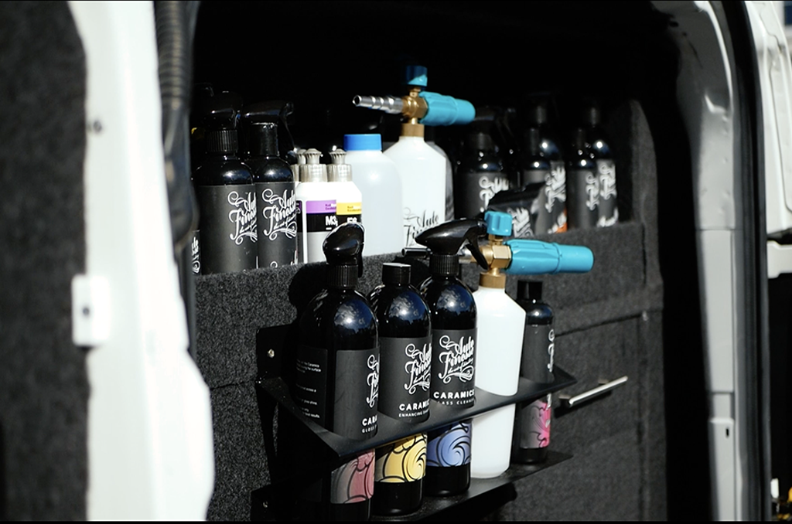

About SGT Details Car Cleaning & Detailing Services
Car Cleaning & Detailing Services including a fully equipped Auto Finesse trained & insured mobile detailer. Combined with the necessary equipment, knowledge and experience, this is a service that will leave your vehicle looking like new.
What’s offered with this type of service?
Ranging from a simple car wash, all the way to paint enhancement and ceramic coatings, this is a service that won’t leave you disappointed. SGT details values the customer and their needs, working with them closely and helping them achieve the desired look and feel for their vehicle. Before any work is undertaken, SGT details will come to your location, discuss your requirements, and carry out a vehicle inspection. Our meeting will cover the packages that are offered and additional advice may be given. Before any work begins, please ensure your vehicle is emptied of any personal belongings.
What is detailing & what’s the difference between detailing and valeting?
Valeting
Detailing is the next step up from valeting. Valeting is a process used for a quick and easy fix for convenience, or for resale value i.e. getting the car up to a passable standard.
The process of valeting is in essence the bones of car detailing; Valeting will generally include the wheels and arches being cleaned, a full exterior wash using a power wash with a citrus cleaning agent, the two-bucket cleaning method, a wipe down of all exterior surfaces with a spray polish, and Interior vacuum.
A full valet will consist of the same process as above but adding in a hand polish and wax to add protection to the vehicles paint work, whilst also giving that glossy look. Including a wet vacuum and shampoo for the interior.


Detailing
Car detailing is more of a meticulous process to achieve high quality results of the paint work, trims, wheels and the interior, ensuring the car has that factory new car feel or as most people like to say when they see the results “it looks like it’s rolled of the conveyor-belt.”
The process of car detailing is similar to that of a valet, however including a more in-depth process to eliminate as many contaminates off the surface exterior. Like in all wash stages before making contact to the body work, the cleaning stage always starts off at the wheels, as you always start off on the dirtiest areas first. The engine bay is the next stage of the process as it’s an area that’s generally forgotten about in the car cleaning world, followed by a clean of the exhaust pipes.
Door shuts and sills are then treated with a citrus wash and agitated with detailing brushes. After these areas are covered, the attention is then to the body work which starts with a pre rinse, a citrus pre wash and a snow foam stage which is used to pull off as much of the contaminates as possible, areas will then be agitated by detailing brushes, another rinse, two-bucket method, chemical disinfect with an iron remover, a rinse down to remove any leftover residue, tar and glue remover which will then be neutralised with the two-bucket method, followed by a final rinse down. Clay bar is then used to ensure all dirt, tar and any other contaminants are removed working from top to bottom.
For the exterior machine polishing is used to obtain the finest results, eliminating 80% to 95% of defects such as swirl marks. In this process, the paint work is inspected to see what areas need more attention for enhancement or correction. Other areas are also inspected such as the lights, which can also be machine polished to bring them back to life.
All trims on the exterior are then dressed to a high standard to ensure it looks like it did when it was new.
For protection of the paint work and to add that extra gloss, either a high-quality wax will be applied which can provide protection for 3 to 6 months.
Ceramic coating is another form of protection that can be applied, this will protect the paint work from 1 to 8 years.
Attention to detail in the interior is a meticulous process, this ranges from the vacuum of all mats and carpets, a steam-clean of the headlining, air vents and other hard to reach areas. Cloth seats can be either vacuumed or wet-vacuumed, or if leather seats scrubbed down with a cleaning detergent and protected for a fresh finish. An all-purpose detergent is then sprayed on to any other surfaces and wiped away leaving the interior refreshed, to finish a dressing is then applied
to keep your car looking immaculate and help retain its value, regular maintenance is the key.
So, is a detail worth it? Detailing your vehicle is absolutely worth it. Not only does it save you from washing your own car, it will have valuable benefits for your vehicle, from classic cars to daily drivers.